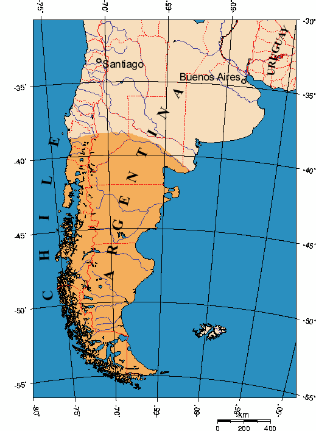

Onde fica a patagonia?
Considerada uma das regiões mais lindas do globo a Patagonia é uma região localizada no extremo sul
da América latina e abrange dois paises, Argentina e Chíle.
A Patagônia é a área com mais geleiras fora das zonas polares, proporcionando paisagens incríveis

Ushuaia
O fim do mundo
Ushuaia é uma cidade turística na Argentina que fica no arquipélago da Terra do Fogo, é a cidade mais ao
sul no globo terrestre por isso é chamada de "fim do mundo".
A cidade serve como base para cruzeiros e passeios pela Antártida que passam pela ilha Yécapasela, a
"Ilha do Pinguim" por conta de suas colônias de pinguins.
Galeria